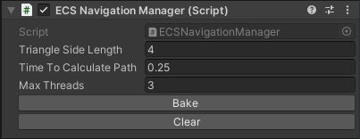
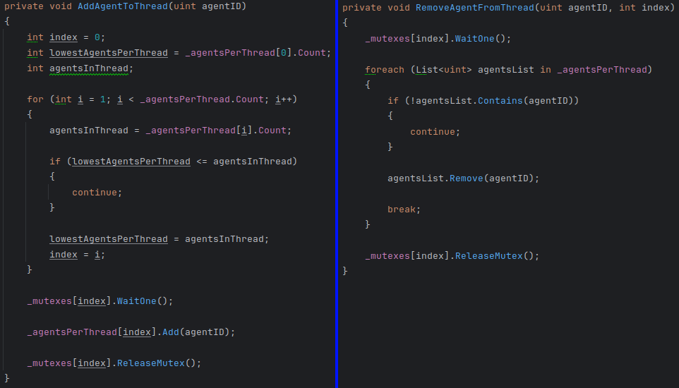
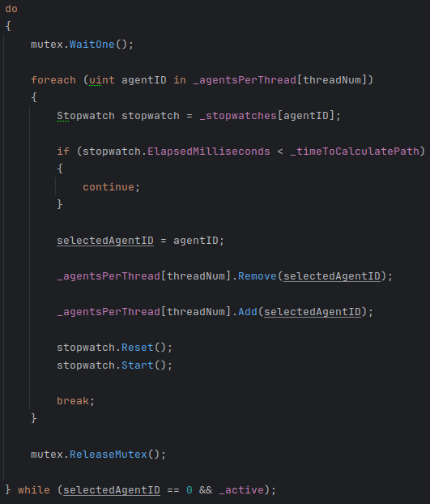
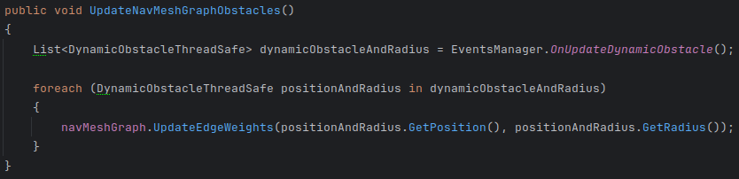
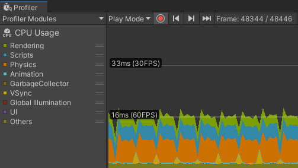

Pounce Palace is a first-person platformer game where the player has to acquire movement skills and learn how to use them in order to defeat the enemies in their path to complete the level.
This game was developed in Unity.
The foes are controlled by an AI, and this has to decide which is the most optimal action. Some enemies are static, but some others can move along the level. The Pathfinding computations can't reside in the main thread while trying to keep the game at 60 FPS, so I needed to implement multithreading to handle pathfinding algorithm calculations.

Implementation
To balance game performance and enemies' movement fluidity, the number of threads and the time elapsed to refresh the enemies' path must be easy to tweak.
To modify them easily those fields were exposed in the editor.

In order to balance the work per thread, enemies' pathfinding calculations would be distributed between threads equitably.
To accomplish this requirement the threads work with a list filled with enemies' id, and those are distibuted when the enemies have been spawned and removed when they are defeated.

The thread is not the one that has the necessity to execute the pathfinding algorithm in sequence when the time limit expires; it is each enemy that needs it. Thus, it would reduce resting times.
In order to achieve this milestone, each enemy has a timer assigned.
An enemy is selected to calculate their path when the timer exceeds the minimum time to calculate the path.
When this happens the selected id is positioned at the end of the list to cycle dynamically the priority, and finally, the timer starts again.
This method lets the enemies' needs balance the computation times, allowing the thread to work almost constantly.

In addition, the threads need to get the positions of all the enemies, but Unity's API can only be used in the main thread. To solve this problem, I defined a class with the purpose of storing the data necessary to update the NavMesh obstacles. And when the computation needs to be done, the thread asks the main thread for the necessary information via events and allocates them in instances of that class.

These implementations allowed me to use mutex only when:
- Adding or removing an enemy from a thread.
- The thread evaluates which enemy's path needs to be recalculated.
